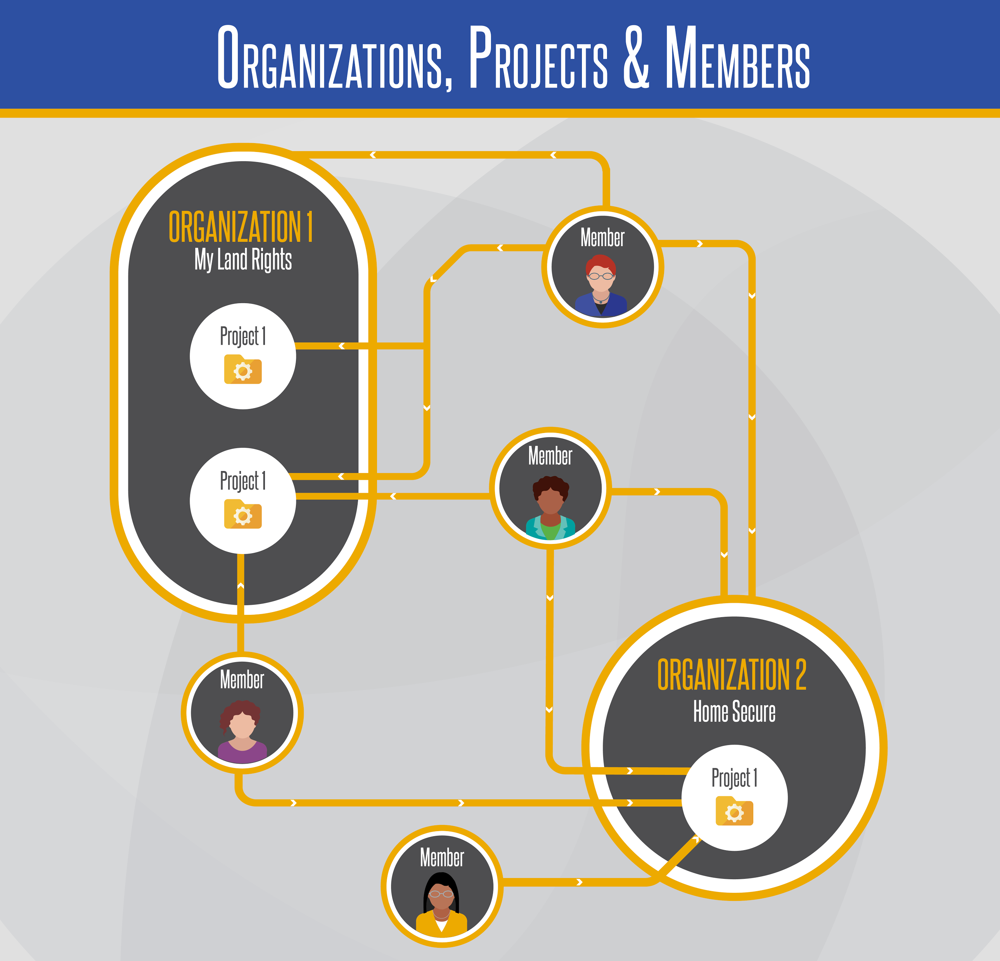
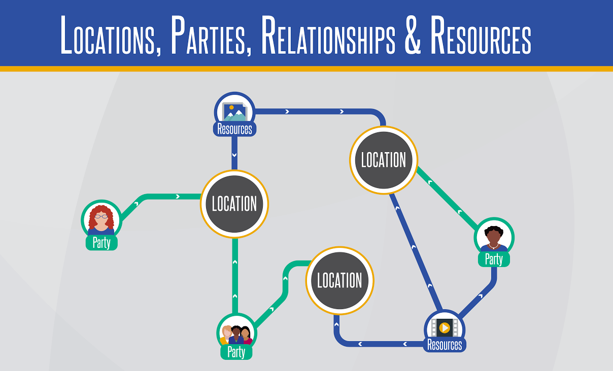
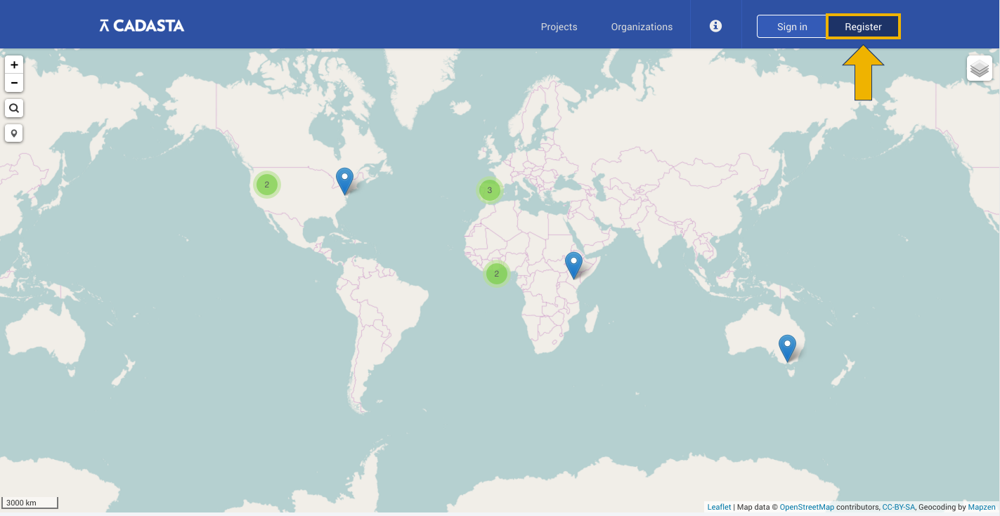

Getting Started
Looking for API documentation? Click here.
How Cadasta is Structured
While anyone can use the Cadasta Platform, it's designed primarily for organizations working to document land and resource rights of individuals and communities. The structure of the Platform matches this design.
Before jumping in, it's important to understand this structure and how everything works together.

At the core of the Cadasta platform are a series of projects. A project covers a specific geographic area, from a small parcel of land to the entire globe. Within the specified project area, there can be numerous project locations. A project may also have multiple project members, each of whom will have permissions specific to the project.
Each project must belong to an organization. An organization represents an organized body of people with a particular purpose. In most cases, organizations are NGOs helping communities to document their land rights. In the Cadasta system, people who belong to an organization are called organization members.
The structure of the data you're collecting for your project depends on how you've structured your questionnaire, which is required to set up your project.

- In addition to storing geographic data, each project is also meant to store a series of records. These records may include resources about the location, such as scanned documents, images, video, audio testimonials or anything else that can help with land rights documentation. All of the location resources are stored in the project library. In addition, each project can also track relationships that a various parties may have to one or more of it's locations.
If you were to view all these parts as an outline, it would look something like this:
- Organization
- Organization Members
- Project
- Project Members
- Questionnaire (which determines the structure of your data collection)
- Project Locations
- Relationships
- Resources
Typically data for each project is collected in the field. This might be done using mobile applications, paper questionnaires, or applications like Field Papers. The Cadasta Platform currently supports two mobile data collection platforms, which are both available for use on Android devices:
Both of these applications integrate with the questionnaire you're using to collect your data and allow it all to be stored on the Cadasta Platform.
Whenever you need to get your data and resources out of the Platform, all you have to do is download it.
Quick Guide to Getting Started
To get started, follow the steps below! For more information and images, follow the links on each step.*
Create your new account by clicking register and entering your name, email, and a few other key pieces of information. Note that you have up to 48 hours to verify your account using the verification link sent to your registered email address.
Next, you need to be added to an organization. To do this, contact your organization's administrator to add you as an organization member. Note that you can be added to multiple organizations in the Cadasta sytem.
- If you're going to be the administrator of a new organization in Cadasta, you can create your organization by selecting the Organizations button and then Add. You'll be asked to enter some basic information about your organization and save it. The person who creates an organization becomes the organization's administrator by default. Note that most users will not create their own organizations; instead they will be added to one.
Next, you need to be added to a project by your organization or project administrator. Administrators can also create new projects and add members to it. As part of the project creation process, you'll be asked to upload a questionnaire, which creates the structure for your data collection. You can use either the minimum questionnaire or the standard questionnaire, or modify one of them to meet your needs. You'll also need to add project members, project locations, and project resources as needed.
Once you have an account, organization, and project, it's time to start gathering data! If you need to collect data in the field, you can use either ODK Collect or GeoODK Collect, which are both applications for Android. If you don't need to be in the field, you can use the Cadasta Platform directly.
* For printed versions, go to the associated section in the document.
Creating a New Account

To get started with Cadasta, the first thing you need to do to is create a user account.
- If you're just trying out the Platform, navigate to demo.cadasta.org. Partners with live projects should create accounts at platform.cadasta.org.
- Select Register from the upper right of the screen.
- Input a username, valid email address, password and your full name.
- Select Register.
From here, check your inbox for a verification email. You'll have 48 hours to verify account creation, or else your account will be deleted.
Next, log into Cadasta, where you'll return to the home screen, where you can view public projects and organizations.